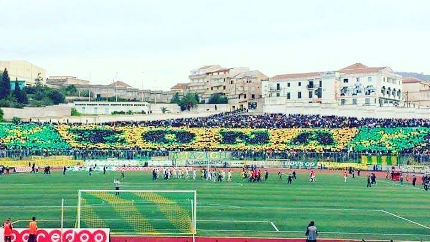

Le Battement de Cœur de la Kabylie : Nos Supporters
La JS Kabylie n'est pas juste un club—c'est un mouvement, une manière de vivre. Des quatre coins de l’Algérie, les supporters de la JSK respirent le football avec une passion inégalée.
Les Supporters
Le cœur et l'âme de notre club, ceux qui tiennent face aux tempêtes et célèbrent les victoires, ceux qui ne vacillent jamais, ne renoncent jamais. Ceux qui parcourent des kilomètres, qui colorent les tribunes de passion, qui vivent et saignent pour ce blason. Ceux qui élèvent leur voix même quand le monde tente de les faire taire. À ceux qui ont tout donné, qui ont tout risqué, qui ont lutté pour ces couleurs sacrées—ceci est bien plus que du football, bien plus qu’un club. C'est une identité, une fierté, un héritage. Le peuple kabyle ne porte pas simplement ces couleurs—il est ces couleurs.
Notre Stade

Le stade Hocine Aït Ahmed est bien plus qu'un simple terrain de football ; c'est ce que les supporters méritaient. Après des années d’attente, notre bastion est enfin ouvert, même s’ils ont essayé maintes fois de nous l’arracher ou d’en stopper la construction. Nous, en tant que supporters, sommes reconnaissants envers notre grand président Hannachi, paix à son âme, qui s'est battu pour ce stade.
La Culture Berbère

La Zona Amazigh respire la musique—c’est ce qui transforme le stade en une forteresse de passion. Les chants dans notre langue maternelle sont bien plus que de simples chansons ; ils sont une déclaration de notre identité, un hommage à nos racines et un symbole de résistance et de fierté. À chaque match, nous brandissons fièrement le drapeau amazigh, rappelant au monde que notre culture, notre langue et nos traditions sont au-dessus de tout. Les couleurs de notre drapeau ne sont pas juste un symbole, elles sont un message : notre identité est vivante, forte et inébranlable. Nous encourageons chaque supporter à embrasser cet esprit, à chanter en tribunes dans notre langue natale et à tout donner pour l’ambiance. Que votre voix porte l’écho de nos ancêtres, que votre énergie galvanise l’équipe, et que notre présence dans le stade reflète qui nous sommes. Plus qu’un simple groupe de supporters, nous sommes le battement de cœur d’une culture, et ensemble, nous écrivons l’histoire.